Flowchart ehk vooskeem on digram, mida kasutatakse protsessi,
algoritmi või töövoo visuaalseks kujutamiseks.
Täpsemalt öeldes saavad vooskeemid:
Flowchart'i kasutatakse:
| Kujund | Nimetus | Kirjeldus | Kasutusnäide |
|---|---|---|---|
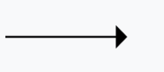 |
Põhijoon | Joon, mis väiljub ühest sümbolist ning viitab teisele. Näitab protsessi tööjärjekorda. | 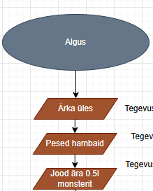 |
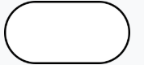 |
Otspunkt (Terminator/Terminal) | Programmivoo algus või lõpp | 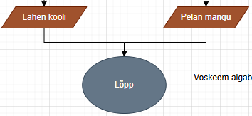 |
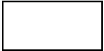 |
Protsess | Tähistab mistahes töötlusfunktsiooni | 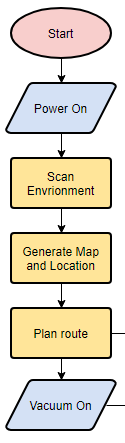 |
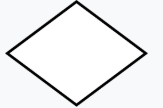 |
Otsus | Tähistab otsust või funktsiooni, millel on üks sisend kuid mitu üksteist välistavat väljundit. | 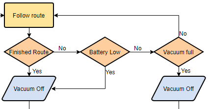 |
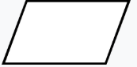 |
Andmed | Andmete sisestamine või tulemuse kuvamine | 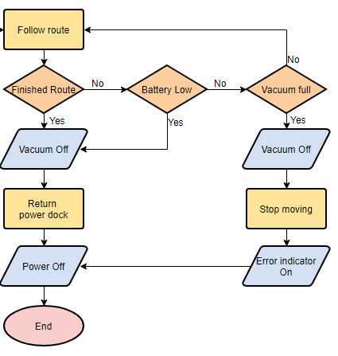 |
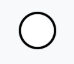 |
Konnektor | Tähistab sama vooskeemi teisest osast sisenemit või teise osasse väljumist. | 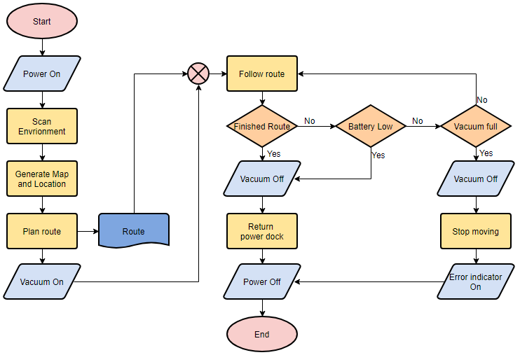 |